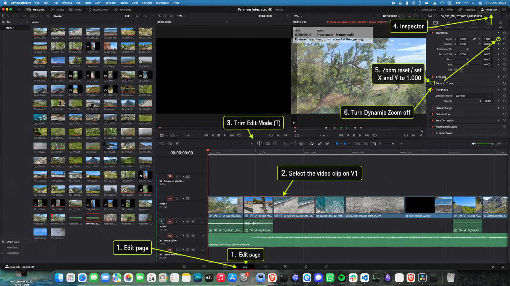

Keep the slot.
Change the moment.
The safe editing skill for the Pyrenees film: change which source frames appear without moving the rest of the timeline, then remove accidental zoom.

Ordinary clip: slip the source range
- Click the blue video clip on V1.
- Press T for Trim Edit Mode.
- Move the pointer over the middle of the clip. Drag left or right. The clip stays in the same timeline slot while the source frames inside it change.
- Watch the viewer’s four-frame display: the two inner pictures are the new first and last frames.
- Release, press A to return to normal Selection Mode, then press Space to review.
Remove unwanted zoom
- Select the video clip, then click Inspector in the upper-right.
- Choose the Video tab and open Transform.
- Click the circular reset arrow beside Zoom, or set Zoom X and Y to 1.000 and Position X and Y to 0.000.
- Turn Dynamic Zoom off.
- Review the clip. If it still looks enlarged while those values are neutral, the crop is baked into the replacement file and cannot be undone from the Inspector.
Safety net: v2 is protected. You are practicing in “Pyrenees Integrated Film · Extended Cut v3.” Press ⌘ + Z immediately if the entire clip moves or the neighboring edit changes.
Primary source: Blackmagic Design, DaVinci Resolve 20 Editors Guide, sections on Trim Edit Mode, slip edits, and Inspector transforms.